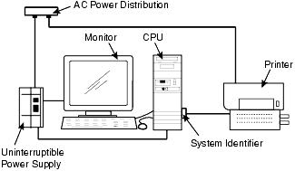
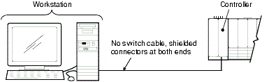
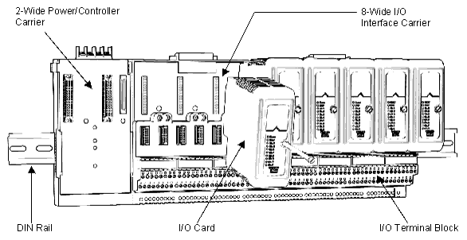
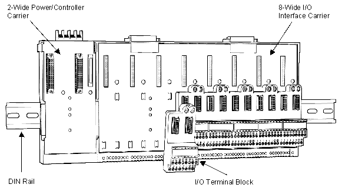
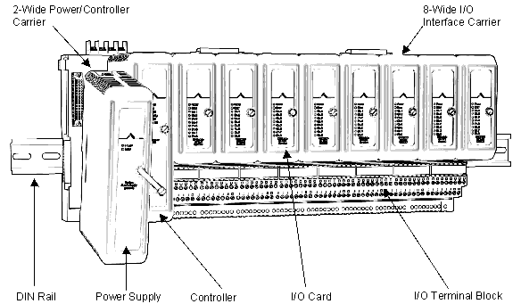

Lesson 06 — Workstation, Control Network, and Power
Source: DeltaV M-Series Hardware Installation and Reference Manual, Emerson D800001X312, April 2021, pp. 44–56.
The controller and I/O cards are installed (Lessons 04–05), but they cannot do anything useful until the workstation is connected and the Control Network links everything together. This lesson covers the final steps of a DeltaV hardware installation: workstation setup, Control Network cabling (including fiber-optic options), connecting to the plant LAN, bulk power distribution, the Remote Network, and Network Time Server configuration. By the end, you will have a fully connected, powered DeltaV system ready for software installation.
6.1 Installing the DeltaV Workstation
The workstation is the human interface to the DeltaV system — it is where operators monitor processes, engineers configure control strategies, and maintenance personnel troubleshoot issues. Installation involves connecting peripherals, applying labels, and installing the system identifier.
Connect peripherals — follow the instructions supplied with your workstation to connect the monitor, keyboard, and mouse to the central processing unit (CPU). Refer to the workstation documentation for I/O port details.
Apply the DeltaV label — if the DeltaV label is not already on your monitor, apply it to the lower right corner of the monitor faceplate. This is a visual identification requirement for DeltaV workstations.
Install the system identifier — plug the DeltaV System Identifier into a USB port on the workstation. This device contains the system license.
Install printer and UPS (optional) — follow the documentation supplied with each device for hardware installation.

Figure 2-19: Workstation installation — connect the monitor, keyboard, mouse, and System Identifier USB dongle. The workstation and all peripherals must share one power distribution and system ground. (D800001X312, p. 45)
Key Concept — System Identifier: The DeltaV System Identifier is a USB dongle that contains the system license. There is one per system, and it must be plugged into the ProfessionalPLUS workstation for the system to operate. Without this dongle, the DeltaV software will not function. Treat it with the same care as a software activation key.
💡 Tip: After hardware installation, refer to the DeltaV media pack installation pamphlet for software installation on the workstation. The hardware is only half the equation — the software brings the system to life. Ensure all workstations share one power distribution and system ground to prevent ground loop issues.
Ref: D800001X312, Section 2.5.12, pp. 44–45
6.2 Setting Up the DeltaV Control Network
The Control Network is an isolated Ethernet LAN that provides communication between controllers and workstations. It is dedicated to the DeltaV system — no other devices can be attached to it. This isolation is a fundamental security and reliability requirement. A separate Ethernet interface through the Application Station or ProfessionalPLUS connects the DeltaV system to the plant-wide LAN.
Key Concept — Network Isolation: The Control Network is an isolated Ethernet LAN dedicated exclusively to DeltaV communication. No other devices can be attached. A separate Ethernet interface through the Application Station or ProfessionalPLUS provides the gateway to the plant-wide LAN. This isolation protects the control system from network-borne threats and prevents control traffic from being disrupted by plant network activity.
6.2.1 No-Hub (Direct Connection) Systems
If your system consists of one workstation and one controller only, you can connect the DeltaV network without using a hub. The cable must be routed directly from the workstation to the controller using a crossover cable.

Figure 2-20: No-hub system example — a single crossover cable connects the workstation directly to the controller. (D800001X312, p. 46)
⚠️ Pitfall — Crossover vs. Straight-Through: No-hub cable (crossover cable) has different wiring from straight-through Ethernet cables. Using a straight-through cable in a no-hub configuration will not work. The crossover cable has 568B pinouts on one end and 568A pinouts on the opposite end. Label crossover cables clearly to avoid confusion during installation.
6.2.2 Hub/Switch-Based Systems
For systems with multiple controllers and workstations, you need one or more Ethernet hubs or switches. Each hub is equivalent to a single IEEE 802.3 repeater (1 hop). The hop limits depend on the network speed:
Network Speed
Maximum Hops
Maximum Hubs in Series
10 Mbit
4
4
100 Mbit
2
2
Key Concept — Hop Limits: 10Mbit networks allow four repeater hops (four hubs in series), while 100Mbit networks allow only two. Exceeding these limits causes collisions and communication failures. Always plan your network topology within these constraints. If you need more than two hops at 100Mbit, consider using fiber-optic links to bridge longer distances.
Ref: D800001X312, Section 2.5.13, pp. 45–46
6.3 Control Network Cable Specifications
The Control Network supports two cable types: Cat5 twisted pair (TP) and fiber-optic. All cables must be made, installed, and tested by an experienced LAN installer. Substandard cables are the single most common cause of Control Network problems — take the time to get them right.
6.3.1 Cat5 Twisted Pair Requirements
All cables must be made from screened Category 5 cable with a maximum length of 100 m (328 ft).
Insulated conductor diameter: 0.89 to 0.99 mm (0.035 to 0.040 in).
Straight-through cables: RJ45 connectors to EIA/TIA 568B pinouts at both ends.
Crossover cables: RJ45 connectors to 568B on one end and 568A on the opposite end.
Hub-to-hub cascade cables: unshielded connector on one end, shielded connector on the opposite end.
Workstation connections: unshielded RJ45 connectors at the workstation end.
Controller and hub/switch connections: shielded RJ45 connectors at the controller and hub/switch ends.
All cables must be tested with the Microtest PentaScanner™ testing tool.
Ethernet wall outlets, punchdown blocks, and patch panels are not supported.
⚠️ Pitfall — Substandard Cables: Substandard cables can create serious communication problems that are extremely difficult to diagnose. Always make sure all cables meet the specifications listed above. Test every cable — do not assume a cable is good just because it was purchased new. The Microtest PentaScanner checks cable mapping, length, crosstalk, attenuation, impedance, loop resistance, and capacitance.
Cable Test
What It Checks
Why It Matters
Cable Mapping
Pin-to-pin continuity
Verifies correct wiring at both ends
Length
Cable run distance
Must not exceed 100 m for Cat5
Crosstalk
Signal leakage between pairs
Causes data corruption at high speeds
Attenuation
Signal strength loss
Excessive loss causes dropped packets
Impedance
Cable impedance matching
Mismatched impedance causes reflections
Loop Resistance
DC resistance of the loop
High resistance indicates poor connections
Capacitance
Cable capacitance
High capacitance degrades signal quality
6.3.2 Fiber-Optic Cable Guidelines
Fiber-optic cables are used for longer distances and higher speeds. The type of fiber required depends on the equipment's port specifications, the site's physical layout, and the distance between devices:
Fiber Type
Application
Max Distance
Typical Fiber
Multimode
100BASE-FX (100 Mb/s)
2 km
50/125 or 62.5/125 µm
Single-mode
1000BASE-LX/LH (gigabit)
Beyond 2 km
9/125 µm
Multimode
1000BASE-SX (gigabit)
~500 m
50/125 or 62.5/125 µm
Fiber-optic cables are terminated with ST, SC, MTRJ, or LC connectors depending on the physical port type on the device. All fiber-optic links should be tested for attenuation (light loss) with an optical power meter, and at least a 3 dB margin should be left below the equipment manufacturer's loss budget.
💡 Tip: The Modal Bandwidth specification (MHz/km) is a distance-limiting factor for gigabit communications on multimode fiber. The actual supported distance may be significantly shorter than 500 m depending on the fiber grade. Always check the manufacturer's specifications for supported distances on gigabit over multimode fiber.
⚠️ Caution: Substandard fiber-optic cables can create serious communication problems. The entire link — including all assembled cables, connectors, and splices from end to end — must be measured and must not exceed the equipment manufacturer's loss budget specification. Always leave at least a 3 dB margin.
Ref: D800001X312, Section 2.5.13, pp. 46–48
6.4 Installing the Control Network Cables
After making and testing all cables, connect them to the network hardware. The procedure differs depending on whether you have a simplex or redundant Control Network.
6.4.1 Simplex Control Network
Connect the unshielded end of a network cable to the twisted pair port on the primary Network Interface Card (NIC) in the workstation, and connect the shielded end to the primary hub.
Figure 2-21: Simplex control network cable connections — the unshielded end goes to the workstation NIC, the shielded end goes to the hub. (D800001X312, p. 48)
6.4.2 Redundant Control Network
For redundant networks, you need two NICs in each workstation and two hubs/switches:
Connect the unshielded end to the workstation's primary NIC and the shielded end to the primary hub.
Connect another cable from the secondary NIC to the secondary hub.
Use color-coded boots for identification: yellow for primary Control Network cables and black for secondary Control Network cables. This convention makes it much easier to trace cables during troubleshooting.

Figure 2-22: Redundant control network cable connections — primary (yellow boot) and secondary (black boot) cables connect to separate hubs and NICs. (D800001X312, p. 49)
⚠️ Pitfall — Crosswired Networks: Make sure you are consistent in your primary and secondary network connections so they are not crosswired. If the primary cable connects to the secondary NIC, the redundancy will not function correctly and may cause network failures. Verify the NIC binding order to differentiate between primary and secondary NICs.
6.4.3 Controller Network Connections
Connect network cables from the hub(s) to the RJ45 connectors on the bottom of each controller. The front connector is for the primary Control Network and the rear connector is for the secondary Control Network.
Figure 2-23: Control network cable connections for a simplex controller — the front RJ45 is primary, the rear RJ45 is secondary. Both use shielded connectors. (D800001X312, p. 50)
💡 Tip: For hub-to-hub connections, one end of the cable must have unshielded connectors. This is specific to DeltaV network requirements — standard Ethernet does not have this restriction. Always follow the DeltaV-specific cabling conventions, not generic Ethernet best practices.
Ref: D800001X312, Section 2.5.13, pp. 48–50
6.5 Connecting DeltaV to the Plant LAN
The DeltaV system can connect to a plant-wide LAN through the third NIC on the Application Station. This provides a gateway between the isolated Control Network and other networks. However, this connection must be carefully managed for security.
⚠️ Security Warning: Emerson strongly recommends that you do not connect the DeltaV Professional, Operator, and Base workstations to a plant LAN or gateway. The ProfessionalPLUS station should also not be connected to the plant LAN, as the engineering database must be protected from unauthorized external access. Use a firewall (Emerson Smart Firewall recommended) at all connection points between the DeltaV Control Network and any external network.
Figure 2-24: Recommended network architecture showing DeltaV controllers, workstations, and remote connections with Emerson Smart Firewall protection at each boundary. (D800001X312, p. 51)
Network Level
Devices
Security Requirement
Control Network (Level 2)
Controllers, Workstations, Smart Switches
Isolated LAN, no external access
DeltaV ACN (Level 2.5)
Application Station (3rd NIC)
Gateway with firewall
Plant LAN (Level 3)
Host systems, remote workstations
Firewall required at boundary
Remote Network
Remote workstations, thin clients
Firewall required
Ref: D800001X312, Section 2.5.13, pp. 50–51
6.6 Connecting Power to the System
A bulk power supply converts AC or DC power to the power required for the system power supply and, optionally, for field devices. The wiring method depends on your existing power supply, distribution scheme, and grounding techniques. Refer to the DeltaV Power and Grounding manual for recommended power and grounding techniques.
6.6.1 Bulk AC to 12 or 24 VDC Power Supply
The simplex bulk AC power supply connects from the AC power distribution/UPS through optional isolation transformers to the bulk supply. The output provides 12 VDC or 24 VDC with DC Return (Ground) to a dedicated plant ground grid point.

Figure 2-25: Simplex power and ground wiring diagram for legacy bulk AC to 12 or 24 VDC power supply — showing the path from AC distribution through the bulk supply to the dedicated plant ground grid point. (D800001X312, p. 52)
Key Concept — Ground Isolation: The bulk power supply provides an isolated common ground reference. The DC return (ground) connects to a dedicated plant ground grid point, separate from the AC ground. This separation prevents noise coupling between AC and DC systems and is essential for clean, reliable power delivery to the DeltaV system.
6.6.2 Bulk 24 VDC to 12 VDC Power Supply
When the plant already has a 24 VDC supply, a DC-to-DC bulk converter steps it down to 12 VDC for the DeltaV system. The wiring connects from the DC power distribution through the bulk supply to the carrier, with the ground reference connected to the dedicated plant ground grid point.
Figure 2-26: Simplex power and ground wiring diagram for legacy bulk 24 VDC to 12 VDC power supply — the ground reference connects to the dedicated plant ground grid point. (D800001X312, p. 53)
💡 Tip: Refer to the DeltaV Power and Grounding manual for recommended power and grounding techniques. The method of connecting power depends on your existing power supply, power distribution scheme, and grounding techniques — there is no one-size-fits-all approach. Appendix H provides legacy bulk power supply specifications and dimensions.
Ref: D800001X312, Section 2.5.14, pp. 51–53
6.7 Setting Up the DeltaV Remote Network
The Remote Network allows remote workstations to connect to the DeltaV system. Users must assign their own PC names and IP addresses before installing DeltaV software. If the remote workstation is already on the plant-wide LAN, it may already have a name and IP address that can be used for DeltaV communications.
Key Concept — Remote Network Reconfiguration: If the IP address of either the Remote Network or the DeltaV ACN changes, you must run Workstation Configuration on all workstations in this specific order: (1) ProfessionalPLUS (only if a download is indicated), (2) the RAS node, (3) the Remote Workstations. Skipping or reordering these steps can cause communication failures.
The cable installation requirements for the Remote Network are the same as for the Control Network — screened Cat5 or fiber-optic cable with the same connector and testing requirements.
Ref: D800001X312, Section 2.5.15, pp. 53–54
6.8 Setting Up a Network Time Server
DeltaV supports GPS Network Time Server equipment for precise time synchronization across the system. The time server connects to the Control Network and has specific IP address requirements that must be configured before the server is connected to the network.
Time Server
Primary Control Network
Secondary Control Network
Primary NTS
10.4.128.1
10.8.128.1
Backup NTS
10.4.128.2
10.8.128.2
The subnet mask for both time servers is 255.254.0.0. For redundant control network systems, attach the primary NTS to the primary control network and the backup NTS to the secondary control network. For simplex systems, attach both to the primary control network.
Key Concept — NTS Placement: For redundant systems: primary NTS → primary control network, backup NTS → secondary control network. For simplex systems: both NTS → primary control network. A default gateway (route) is not required for the Network Time Servers — the subnet mask alone is sufficient for time synchronization on the control network.
💡 Tip: If you are attaching a Network Time Server to a DeltaV Remote Network (rather than the Control Network), the IP address is not predefined. Your network administrator must assign a valid IP address for the remote network segment, and this address must be used in the Remote Network properties dialog box in DeltaV Explorer.
Ref: D800001X312, Section 2.5.16, pp. 54–56
Quiz — Lesson 06

DeltaV DCS node hardware assembly diagram mounted on a 35mm DIN rail. Left side: 2-Wide Power/Controller Carrier containing a Power Supply module (AC mains to DC conversion) and a Controller module (the 'brain' executing process control logic). Right side: 8-Wide I/O Interface Carrier with 8 individual I/O cards translating signals between controller and field devices (sensors, valves, actuators), plus I/O Terminal Block at bottom for physical field wiring connections. (page 44)
class="quiz">
Knowledge Check
Q1: What type of cable is needed for a no-hub (direct connection) system?
A crossover cable is required, with 568B pinouts on one end and 568A pinouts on the opposite end. A standard straight-through cable will not work in this configuration because both devices are trying to transmit on the same pins.
Q2: What is the maximum number of repeater hops allowed on a 100Mbit Control Network?
A 100Mbit network allows a maximum of two repeater hops (two hubs in series). A 10Mbit network allows four hops. Exceeding these limits causes collisions and communication failures.
Q3: Why does Emerson recommend not connecting DeltaV workstations directly to a plant LAN?
Security. Connecting DeltaV workstations directly to a plant LAN exposes the system to potential unauthorized external access. Emerson recommends using a firewall (such as the Emerson Smart Firewall) at all connection points to protect the DeltaV network.
Q4: What is the correct connector shield convention for Control Network cables?
Unshielded RJ45 connectors are used at all workstation connections. Shielded RJ45 connectors are used at all controller connections and all hub/switch connections to nodes. For hub-to-hub cascade cables, one end is unshielded and the other is shielded.
Q5: What IP address should be assigned to the primary Network Time Server on the primary Control Network?
The primary NTS on the primary control network uses IP address 10.4.128.1 with subnet mask 255.254.0.0. No default gateway is required.
Q6: What is the purpose of the DeltaV System Identifier, and where must it be installed?
The DeltaV System Identifier is a USB dongle that contains the system license. There is one per system, and it must be plugged into the ProfessionalPLUS workstation. Without this dongle, the DeltaV software will not function.
Q7: If the IP address of the Remote Network changes, in what order must Workstation Configuration be run?
Workstation Configuration must be run in this order: (1) ProfessionalPLUS (only if a download is indicated), (2) the RAS node, (3) the Remote Workstations. Skipping or reordering these steps can cause communication failures.
Q8: What tests does the Microtest PentaScanner perform on Cat5 cables?
The PentaScanner tests: cable mapping, length, crosstalk, attenuation, attenuation-to-crosstalk ratio, impedance, loop resistance, and capacitance. All cables must pass every test before installation.